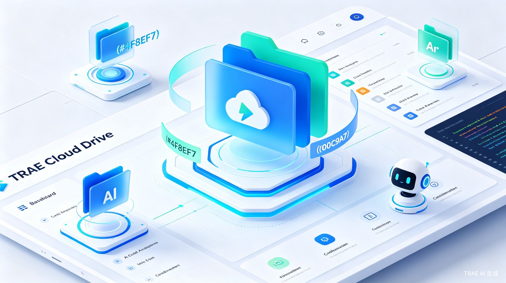
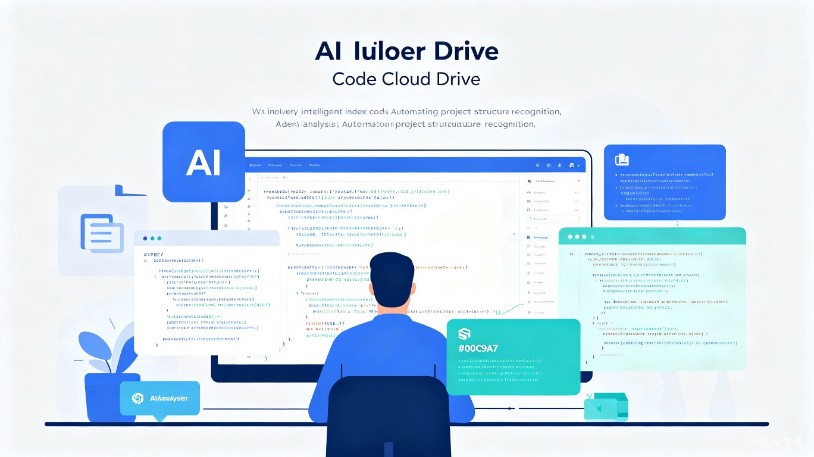
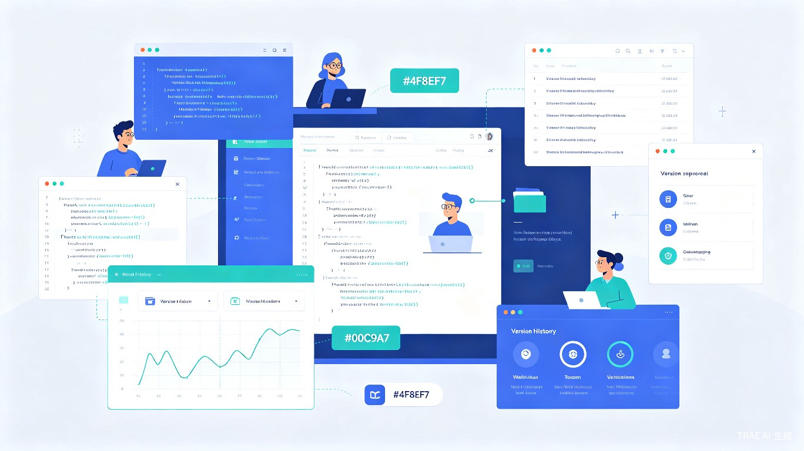

借鉴豆包云盘的 AI 赋能理念，打造专为开发者设计的智能云存储平台——不仅能存文件，更能理解代码、分析项目、辅助协作，让每一行代码都有归处。
2026 年，豆包云盘凭借 无限容量、不限速传输、AI 赋能文件管理 三大优势迅速走红，让用户看到了"AI + 云盘"的巨大潜力。然而，市面上的云盘产品大多面向通用文件存储，缺乏对开发者核心工作流的深度支持。
TRAE 云盘的灵感正来源于此：我们希望将豆包云盘的 AI 赋能理念与 TRAE 的开发者生态深度结合，打造一款专为开发者设计的智能云盘——不仅能存储代码和项目文件，更能通过 AI 自动理解代码结构、分析项目依赖、辅助团队协作，真正成为开发者的"第二大脑"。
项目代码分散在本地、GitHub、Gitee、各种云盘中，缺乏统一管理入口，切换成本高。
传统云盘只能按文件名搜索，无法按函数名、类名、代码逻辑等语义维度检索代码片段。
文件分享后对方无法直接预览代码高亮，缺乏行级评论和 AI 辅助 Code Review 能力。
TRAE 云盘是一款 嵌入 TRAE IDE 生态的智能云存储产品，形态为 Web 应用 + IDE 插件双端联动。它不是一个独立的网盘 App，而是深度集成在开发者日常工作流中的代码资产管理平台。

上传代码文件后，AI 自动分析项目结构、识别关键函数和类、生成代码摘要，支持自然语言问答。
自动识别项目类型（前端/后端/全栈），按技术栈、框架、语言智能分类，告别手动整理。
借鉴豆包云盘不限速理念，上传下载不限速度，大体积项目文件秒级同步。
支持按函数名、变量名、注释内容、甚至自然语言描述搜索代码片段，精准定位目标代码。
生成分享链接后，接收方可直接在浏览器中查看带语法高亮的代码，支持行级评论。
分享代码时可选开启 AI Code Review，自动检测潜在 Bug、安全漏洞和性能优化建议。
豆包云盘的 AI 阅读功能让文档管理效率翻倍，TRAE 云盘则将这一能力深度定制到代码领域，让 AI 不仅"读懂"文件，更"理解"代码。

| AI 能力 | 豆包云盘 | TRAE 云盘（创意） |
|---|---|---|
| 文档摘要生成 | ✓ 支持 | ✓ 支持 |
| 文档问答 | ✓ 支持 | ✓ 支持 |
| 代码结构分析 | ✗ 不支持 | ✓ 自动识别项目架构 |
| 函数/类级索引 | ✗ 不支持 | ✓ 智能代码索引 |
| 语义代码搜索 | ✗ 不支持 | ✓ 自然语言搜代码 |
| AI Code Review | ✗ 不支持 | ✓ Bug/安全/性能检测 |
| 依赖关系图谱 | ✗ 不支持 | ✓ 可视化依赖关系 |
| 音视频转文字 | ✓ 支持 | ✗ 不支持（聚焦代码） |
TRAE 云盘不仅是个人代码仓库，更是团队协作的桥梁。从代码分享到 AI Review，从版本对比到实时讨论，打造开发者的协作闭环。

统一管理个人项目代码，AI 自动归档分类，随时搜索历史代码片段，提升复用效率。
团队共享代码库，一键分享项目文件，AI Code Review 辅助代码评审，提升代码质量。
存储学习资料和练习代码，AI 自动生成学习笔记和代码注释，辅助编程学习。
| 用户群体 | 使用场景 | 核心痛点 | TRAE 云盘解决方案 |
|---|---|---|---|
| 独立开发者 | 个人项目代码管理 | 代码散落在各处，难以检索复用 | AI 自动归档 + 语义搜索 |
| 小型开发团队 | 团队代码共享与评审 | 代码分享后无法在线预览和讨论 | 语法高亮预览 + 行级评论 + AI Review |
| 编程学习者 | 学习资料与练习代码管理 | 代码笔记混乱，难以系统整理 | AI 自动生成注释和学习笔记 |
| 开源贡献者 | 多项目代码片段管理 | 跨项目代码复用效率低 | 跨项目语义搜索 + 代码片段收藏 |
语义搜索替代文件名搜索，从"翻文件夹"到"问 AI"，代码复用效率指数级提升。
无需资深工程师把关，AI 自动检测 Bug、安全漏洞和性能问题，降低代码审查门槛。
深度集成 TRAE IDE，云盘操作无需离开开发环境，实现真正的无缝工作流。
豆包云盘在 2026 年的爆火证明了市场对 "AI + 云盘" 组合的强烈需求。其不限速传输、无限容量、AI 文档理解三大特性深受用户好评。TRAE 云盘在此基础上，将 AI 能力从"通用文档理解"升级为"深度代码理解"，从"文件存储"进化为"代码资产管理"。
| 维度 | 豆包云盘 | TRAE 云盘 |
|---|---|---|
| 定位 | 通用 AI 云盘 | 开发者专属智能云盘 |
| 核心用户 | 大众用户 | 开发者 / 编程学习者 |
| AI 能力 | 文档摘要、问答 | 代码分析、语义搜索、Code Review |
| 文件类型 | 全格式支持 | 聚焦代码 + 常见文档 |
| 传输速度 | 不限速 | 不限速 |
| 协作能力 | 链接分享 | 代码预览 + 行级评论 + AI Review |
| 生态集成 | 豆包 App 内置 | TRAE IDE 深度集成 |
实现基础的云存储功能（上传/下载/文件夹管理），集成 AI 代码分析引擎，支持代码摘要生成和语义搜索。不限速传输，支持常见代码格式预览。
新增团队空间、权限管理、代码分享链接（带语法高亮预览）、行级评论、AI Code Review。支持与 Git 仓库联动，自动同步代码变更。
深度集成 TRAE IDE（侧边栏云盘面板、右键上传、AI 内联问答），开放 REST API 供第三方工具接入，构建开发者云盘生态。
TRAE 云盘 — 不只是存储，更是开发者的 AI 代码资产管理平台
查看 Demo 演示